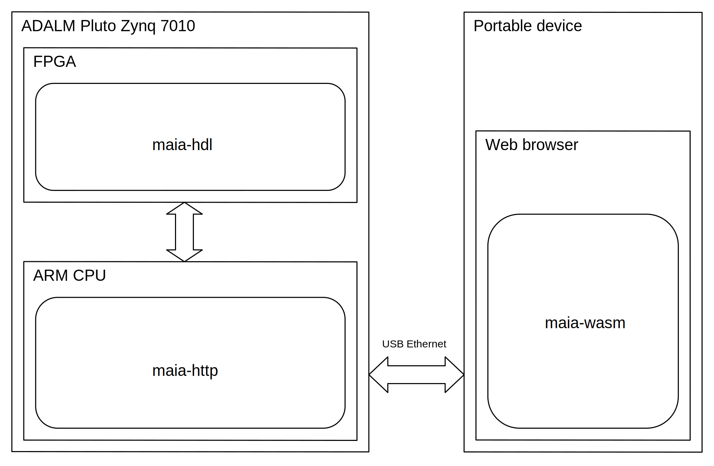

Demo
Overview
Maia SDR currently provides a firmware image for the ADALM Pluto with the following functionality:
- Web-based interface that can be accessed from a smartphone, PC or other device.
- Real-time waterfall display supporting up to 61.44 Msps (limit given by the AD936x RFIC of the Pluto).
- IQ recording in SigMF format, at up to 61.44 Msps and with a 400 MiB maximum data size (limit given by the Pluto RAM size). Recordings can be downloaded to a smartphone or other device.
Though this is still limited functionality (more will come in the future), it already provides a "minimum viable product" that demonstrates some features that cannot be easily accomplished with other portable and affordable solutions.
Here is a deployment diagram of Maia SDR used with a portable device running a web browser.

The FPGA design (maia-hdl) is written in Amaranth and includes:
- Pipelined FFT core focusing on low resource usage and flexible configuration.
- DMAs focusing on low resource usage and high throughput.
A software application (maia-httpd) written in asynchronous Rust runs on the Zynq ARM CPU. It provides:
- An HTTP server that serves the UI as a web application.
- Control of the FPGA IP cores and AD936x through a RESTful API.
- Streaming of waterfall (spectrogram) data using WebSockets.
The UI is a web application (maia-wasm) written in Rust with WebAssembly. It uses WebGL2 to render the waterfall (see the waterfall demo).